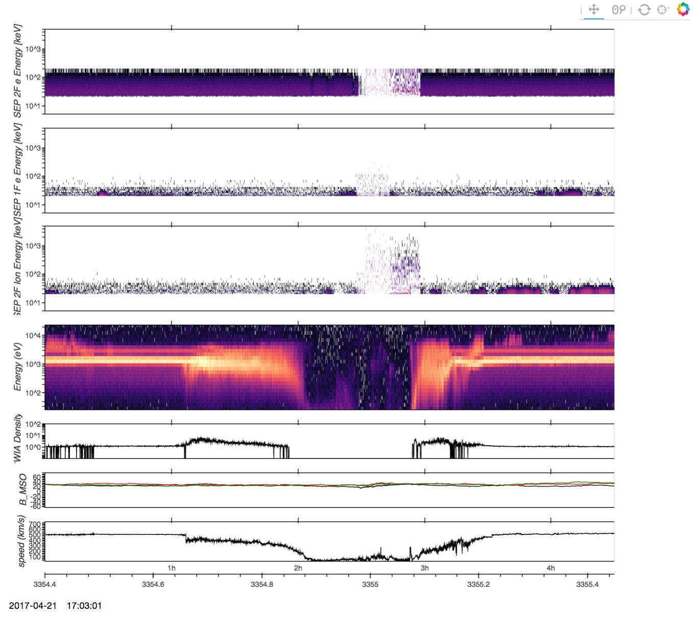
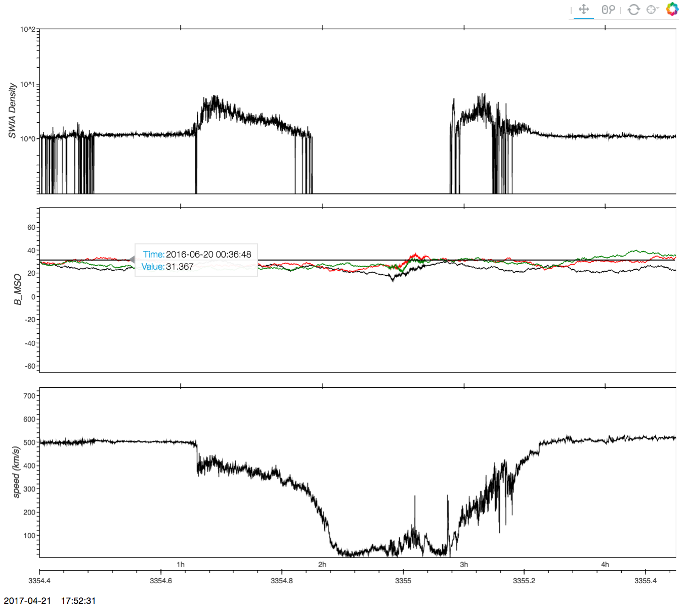

Pytplot is a python package which aims to mimic the functionality of the IDL "tplot" libraries. The primary routine (tplot) generates HTML files for the specified plots, and automatically opens the files in a browser tab. These files have several user interaction tools built in, such as zooming and panning.
Pytplot uses the Bokeh Visualization Library and can be used in Python scripts, or interactively through IPython and the Jupyter notebook. Repository:


Stacked plots using data from the MAVEN satellite. Plots with 3-dimensional data are plotted as spectrograms. The Bokeh library allows for interaction such as panning and zooming.

Multiple lines can be plotted on each graph and a hover tool shows further information about the data.